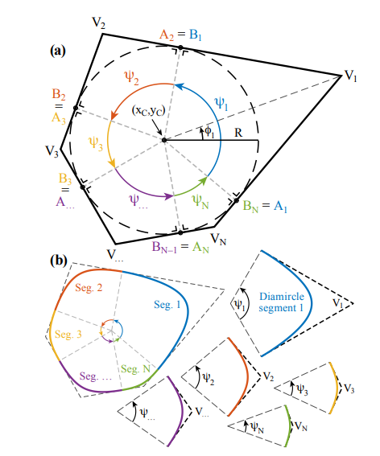
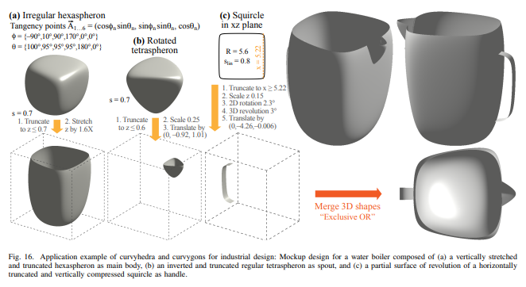

Home
This website details a project for CSCE 645, Geometric Modeling for the Fall 2025 Semester at Texas A&M University
Proposal
Summary
The main problem I am addressing during this project is morphing between 2 curves. Ideally, one would want a really easy method for finding a smooth transformation between curves and surfaces as to not form cusps or self-intersections. I would like to design a program to either demonstrate methods (if I find too many good ones during my literature review) or create my own to animate a morph between two curves and hopefully between 2 surfaces. This is a problem that would be very useful to many different people who actively work with shapes and curves like animators, designers, and other engineers, such as aerospace engineers.
Inspiration
- Homotopic Morphing of Planar Curves (2015)
- Curvygons and Curvyhedra: 2D/3D Shapes that Smoothly Morph from Circles/Spheres to Circumscribed Polygons/Polyhedra (2025)
- Free-Form Deformation of Parametric CAD Geometry via B-Spline Transformations (2023)
- Morphing Rational B-spline Curves and Surfaces Using Mass Distributions (2003)
Goals
Update 1 | 10/31/2025
- Literature Review
- Select 3(?) techniques to compare -or- Work towards creating come new morphing technique
- -> Make sure the math works out
Update 2 | 11/24/2025
- Animated Spline Morphing for 2D
- Begin Work Rendering 3D Surfaces
Final Report | 12/16/2025
- Animated Spline Morphing for 3D Surfaces
- A Demo showcasing different techniques
Update 1: 10/31/2025
Overall, progress is lacking. Really, I had spend too much time these past few weeks reading papers and books that had very little to do with this project I had selected. For instance, I've been reading up on non-linear dynamical systems (chaos theory), geodesics, and conformal mapping. Despite this, I have (at the very least) not slacked on my reading tailored to the project. More details will be provided in my actual literature review (located under the "Citations" tab), but as an overview of what to expect from that: I have gathered a series of 5-6 core papers directly related to my topic of morphing curves, and about a dozen other papers that are related or explore applications of the methods I will be exploring in this project.
The literature surrounding this topic was a fair bit more barren that I had originally anticipated. Although my original idea was to implement various techniques and do a kind of comparison of such, this goal may not be so achieveable. The main differences in techniques stem down to how is the curve expressed (e.g. spline, polygon, closed or open curve, etc.) and how data should flow. What properties do we want in the interpolatory frames and does the information that describe the curve before and after the morph match up well. It is not the case, like I had originally anticipated, that there are multiple techniques to achieve various properties during the morphing process, but due to the constraints of a curves definitions, there seems to be natural techniques given various scenarios. Due to these complications regarding the ambiguity of the process and my goals hencforth, I will provide a new, detailed, restructuring of my goals for this project.
Updated Goals
By Update 2 | 11/24/2025
- Animated Spline Morphing applying simple methods between 2 B-splines with same control points/know vectors (by next week)
- Go beyond linear interpolation of control points and work on implementing method that preserves C1 continuity
- Expand methods to NURBS and look into implementing another (older) technique for comparison, The "Mass Distributions" paper
By Final Report | 12/16/2025
- Expand demo to closed curves to morph topologically similar curves
- Develop recursive method to insert control points and modify knot vector to morph B-splines of different sizes
- Optimizations and stress testing with self-intersecting geometry and other extreme cases
Update 2: 11/24/2025
Unlike last report, I actually have some working code now (to some degree). Overall, I am still behind where I though I should be at this point I had accomplished the simple morph without regard for anything above C0 continuity, but I had encountered some slightly unexpected difficulties that other projects have made me aware of. When working on spline surfaces, I realized my approach was naïve and did not provide nice ways to perform transformations on the control points, weights, or spline as a whole. To rectify this issue, while maintaining good quality renders in real time, I went about the extensive process of designing a new data structure to host my splines so that they are adaptive to change and can morph them as I see fit. This goal ate up most of the time I had reserved for other aspects of the project. Realistically, I should have just dedicated more time to the project, but my concurrent work in other classes drew more of my attention during this period. Luckily though, these other distractions will be completed by December 1st, leaving the majority of my time to catch up in this project.
My other hangup during this period was on the difficulty of NURBS. I decided to switch my implementation order and after a successful simple morph I felt it was important to properly be able to disply NURBS and went about tackling this issue. Long story short, my code is full of bugs (hahaha). The way I went about implementing NURBS is by first starting with some of my calculations from my spline surface code. The spline class that I have built handles keeping track of and updating as it sees fit a discretized list of points that approximate the splines arc. The class also has draw methods to draw not only this arc, but also optionally the control points and polygon. The data structure maintains a list of control points, each of which has a point and a weight, a knot vector, a degree value, resolution and the approximation as specified. As of now the resolution of the approximation is chosen and passed into the structure during the render process. I plan to amend this so that the line is adaptable to zoom, and optimized to render only what is in the viewport, but I have not had any slowdowns yet, though I fear this might be essential when I move over to rendering surfaces. The reason for the spline to maintain its own approximation of itself is for optimization needs. I only want the spline to be updating its position when necessary. I have also added some nice quality of life features now that allow me to set up the scenes that I want to display like being able to pass matrices into the spline datastruct to perform a transformation on all the control points, and another optimization plus, I have even used it on the spline approximation when updating the surface instead of recalling a method to update the surface relative to the control points. I belive this is better (not sure how numerically stable, but it should be fine). This method may be slower than recalcuating spline positions using deBoore's algorithm, but only in low-degree spline situations.
In conclusion, despite more lackluster progress, I now have a strong foundation with most of the boilerplate out of the way to really begin work on the crux of my problem. Next steps will include fixing my NURBS implementation, implementing some of the methods for morphing found during my literature review, and a comparison and analysis of these techniques. If time permits, I really would like to expand these techniqes to 3D, but I can see several potential challenges with this process now. The biggest one is the fact that though it would be similar to what I have now, I would actually have to design a new data struct specifically to handle the double-parameterization. Generalizing what I have to both splines and spline surfaces seems problematic.
Updated Goals
By Final Report | 12/16/2025
- Debug and fix implementation of NURBS and verify/optimize corect spline behavior
- Go beyond linear interpolation of control points and work on implementing method that preserves C1 continuity
- Implement parts of the "Mass Distributions" paper for NURBS splines
- Expand demo to closed curves to morph topologically similar curves
- Develop recursive method to insert control points and modify knot vector to morph B-splines of different sizes
- Optimizations and stress testing with self-intersecting geometry and other extreme cases
Final Report
By: Ryan Parmer
Problem
Stemming from early work in graphics and modeling, many artists and designers make use of B-Splines, commonly non-uniform, rational B-Spline(NURBS) systems. Many objects, lines, and surfaces are defined by these shapes. One semi-common task that especially artists must perform is interpolations and morphs between these objects, lines, borders, etc. In practice, this is most commonly done exhaughstively by sketching out precisely what the designer imagines the morphed shape should look like. This of course gives more creative control over the design, but it is not very efficient, especially when wanting to interpolate between shapes for multiple frames in order to get a nice, smooth transistion. We want tools that are able to generatively make custom morphings between arbitrary curves, but also provide the user with controls able to provide some nice guarantees about the overall shape and design of interpolatory curves. For instance, if we took the easy method for morphing between 2 curves it is very likely that the interpolatory frames would contain some non ideal curves, such as non differentiable curves like cusps. So basically, we want to be able to generate morphs that are smooth, adaptable and "nice".
Previous Work
There is a plethora of previous work in this field and a lot of it is covered in much detail in the Literature Review, but I will provide a quick summary here:
Morphing is a problem of deformable surfaces and categorizes morph operations primarily by surface representation and deformation strategy, drawing from foundational work in the 1980s–90s: explicit continuous models such as B-splines and NURBS (the focus of the project) enable control-point–based interpolation and optimization, while implicit models (e.g., algebraic surfaces) and discrete models (e.g., triangulated meshes) support alternative morphing needs such as artist-driven mesh deformation in animation, classic free-form deformation methods introduce space-warping cages over B-reps and CSGs to morph entire volumes, later extended into practical sculpting tools. computational geometry contributes topological morphing techniques, including lifting 2D planar graphs into higher dimensions to enable smooth morphs between non-equivalent shapes, application-driven spline deformation appears in medical imaging via B-spline fitting and optimization, and in locally optimal morphs guided by Fréchet-distance-based control-point correspondence. More recent work emphasizes artistic and applied morphs, such as weight-driven NURBS morphing between circles and polygons (Curvygons), thin-plate spline morphs for swarm formation and obstacle avoidance, and emerging neural representations that learn deformation mappings, collectively illustrating that morph methods vary widely: control-point interpolation, space warping, topological lifting, distance-based optimization, physics-inspired splines, and learned models...depending on representation and application context.
Work Accomplished
Now this is the section where I tell you about exactly all the amazing work I have done to advance this topic and truthfully, not any reportable work can be shown, so instead I will talk about what I achieved and what went so wrong. If you have been following along with my progress updates, I had developed a data structure that can optimally store NURBS (albeit with some issue per "Update 2") and can accomplish simple, linear, C0 morphs. Since update 2 I had fixed the issue with the weighted control points, meaning that before I basically only had "NUBS" and successfully implemented "NURBS". I was also able to freely control and shape these splines by providing transformation inputs to the entire spline, or control points, to even updating weights and knots of the splines. This allowed me to then implement a simple technique for C1 for closed curves with the same turning number and same number of control points found in a paper by Dym et. al. and another technique found in a paper by Bjorn Vermeersch. Now the implementations were not all that deep and not tested in edge cases and this leads into the main problem which came up in this project...(The next paragraph contains some rants of some extrordinary circumstances regarding my timeline of the project)
I have made the extremely rookie error of not saving this project to a git repository. I had the project folder sitting in my Microsoft OneDrive and thought it was protected enough, little did I know that my OneDrive (that's supposed to be shared and regularly updated between my computers) was in fact not updating and the project was only saved locally on my laptop. The issue being, my laptop was out of storage and long story short, the project folder was accidentall wiped off my computer sometime over Thanksgiving break. The second problem is that I did not realize this had happened. I had some other projects(on github) that I had finished working on during the first week of December, so I was really surprised when I sat down 12/9 to discover that the project was missing. My next mistake at this point was thinking that I could restart the project during finals week and it would work out. Basically I ran into some bugs that I hadn't before and this time I did not have the luxury to solve them while taking other finals! Looking back on this experience, I will say that besides be *stupid*, I should have also been taking videos of my progress so that if something were to happen I could actually have something to show, BUT I DON'T. Additionally, this reflection is kind of obvious, but I definately should have been using Github. Lastly, I should have just started the project earlier. If I had done more work before updates 1 or 2, maybe I would have actually had something worth showing off for those updates that would have been a good fallback for this exact situation.
So, since the results section will be empty, I will instead fill it a personal comparison of techniques that I studied while desiging and researching this project and how useful their techniques are in general.
Results
Approaching from a more mathematical basis. There has been a lot of work on homotopic transformations of curves. Specifically, general, closed parametric curves of the same winding number (number of turns performed along the curve before reaching the starting point again). There have been some work in this field using splines as in Dym et. al. to define the parametric curve, but the main concerns in this research is usually on the mathematical theorems and not the computability of ones. The techniques to present a very solid foundation and propose the most direct methods of providing guarantees regarding the continuity of curves on interpolatory frames. Specifically in the paper mentioned, they devise a method of retaining Ck continuity on interpolations of the curves of the same continuity. In very specific use cases when designing parts with certain continuity specifications it may be nice to have 2 simpler parts that meet the continuity restraints that provide a lower and upper bound on the part that a user would actually like to design. They then would be able to interpolate between the surfaces to find or approximate the part they really need while maintaining the specifications of the problem. This is a pretty niche use case but can be found in small-scale medical, aerospace, and other highly technical fields of design.

The original inspiration of this project was found in a paper by Bjorn Vermeersch and his work on "Curvygons" and "Curvyhedra". This work pursued the simple design of good looking presentations and shapes. The main goal of his project was to smoothly transition between circles/sphere, and in general, any type of convex polygon/polyhedra. His research lead to 2 major applications which he has decribed in his paper. By forming collection classes of "curvygons" he has defined some nice "grammar" of design primatives. One use if for smooth transistions in presentations to easily present a morph between shapes that contribute to the desgin flow of a system. In his example he compares 2 English rock bands and uses a transistion from a triangle to a circle to a pentagon to identify that the first band has 3 members and the second, 5. This is a relatively simple example but provides a use for the design ecosystem. The more intesting uses are with the "curvyhedra" (pictured below) where he defines some simple primatives given some collection of parameters that make up a fairlly complex shape. He also extends this by showing that you can form very adjustable gear systems as well. This project provides a very contrained example of a use case of morphs in the aestetic design of everyday things. This is one of the most modern projects with one of the most flushed out user interatibilty of similar works.

One of the more promising techniques, specifically the case of rational B-splines, Tao Ju and Ron Goldman have a pretty great method of using the weight vectors associated with the B-splines to dictate their morph. They first start with a linear interpolation of two B-spline's control points and weights of those control points. This method is ok, but not ideal as the results it produces may lead to self-intersections or "shrinking", where pieces of the curve bunch up as the weights between the control points do not line up correctly for where they are positioned and appear to bunch up the curve. The intuition here is to consider redefining operations on the B-Spline in Grassmann space, where each control point has an associated mass and operation like addition and multiplication are redefined in order to model realistic behavior between the masses. Here the paper defines a new notation to handling mass computation, called mass-point form: mp/m where m is the mass and P is the point in the control polygon of the B-spline. The paper then redefines what it means to perform scalar multiplication and addition here so that in practice, scalar multiplication of the weights now does not update the positions of the points and addition is similar to summing the masses and moving the new point to the center of mass between the two. This method presents one of the best compromises that I have seen when dealing with B-Spline morphs. Unlike other methods it does not provide any guarantees when it comes to every single interpolatory frame between curves, but gives a nice model that seems to hold up to most cases in practice. This method is efficient and provides the user with useable morphs that are more realistic than methods that do not use B-splines, such as using blendshapes (more on this later).
In conclusion, we find that in some niche use cases, it is very likely that B-Spline based morphing methods can find some uses that appear better than any alternative (that at least I know of). Most current, good use cases seem to be constrained problems in which the user has a very specific type of morph that they want to accomlish with very specific types of shapes. General methods seem to introduce too many degenerate cases that are problematic, such as changing the number of control points during morph or morphs involving some topological changes that are not necessarily well defined such as where to split a closed curve when attempting to morph to one that is not. Many of these problems are studied, but in the context of B-spline morphing, the information is a little sparse.
Analysis
New Results
None 😔
Meeting Goals
Due to some very embarassing errors, the goals set out by this project were not met. The artifacts demonstrating the work and even the comparison and merging of various techniques is non-existent. I covered a lot of what should go in this section in "Work Accomplished" as to provide the early context for the "Results" section.
Future Work
A lot of the results seen in related works and various other projects lead me to the belief that although this pure math approach to curves is certainly interesting and does have its very specific applications, overall a lot of the advancements were made in the 90's and 00's and better methods have been found since. Or, even more so for the next example I will talk about, some methods were found even earlier and are still better. This example I am referring to is blendshapes. Blendshape in computer graphics are a technique for deforming a 3D model's mesh from a neutral state to various target shapes (useful in facial animation) by moving vertices, using sliders to control the intensity of each key shape. This allows an artist or user of blendshapes to freely morph and interpolate between several blendshapes at once using very simple linear interpolation. This method is generalized to any 3D models, works on several different scenarios, and is inherently very fast and optimized. The main advantage that the spline methods have is that they enable "nicer" morphs that maintain certain continuity properties. For artists and designers, the restrictions and overheads that spline-based methods create is not worth the benefits they provide is most use cases. So, it is better that future work go into other areas that solve these problems in different way so that they might be more functional. Future work in this area though would attempt to design some user-friendly tool that can handle a lot of the overhead of working with spline-based curves in the background, giving the user some intuitive design controls over the morphs. Other work that needs to be studied and especially added onto this specific project is an implementation that generalizes splines, able to morph between curves of different degrees, containing different knot vectors, and even containing different numbers of control points. An optimal tool would be able to take ANY 2 B-Splines as input and produce a "nice" looking morph
AI / External Code Statement
No generative AI was used in the making of this project, though the following libraries were used:
- OpenGL, GLFW, GLEW
- GLM
- Template code for a C++ graphics project credit to Dr. Shinjiro Sueda